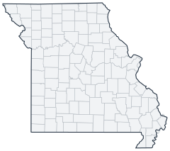

Historical county changes, 1790–1990 › Missouri

| Name↕ | Unit↕ | Existed↕ | FIPS↕ |
|---|---|---|---|
| Adair County | county | 1850–1990 | 29001 |
| Andrew County | county | 1850–1990 | 29003 |
| Atchison County | county | 1850–1990 | 29005 |
| Audrain County | county | 1840–1990 | 29007 |
| Barry County | county | 1840–1990 | 29009 |
| Barton County | county | 1860–1990 | 29011 |
| Bates County | county | 1850–1990 | 29013 |
| Benton County | county | 1840–1990 | 29015 |
| Bollinger County | county | 1860–1990 | 29017 |
| Boone County | county | 1830–1990 | 29019 |
| Buchanan County | county | 1840–1990 | 29021 |
| Butler County | county | 1850–1990 | 29023 |
| Caldwell County | county | 1840–1990 | 29025 |
| Callaway County | county | 1830–1990 | 29027 |
| Camden County | county | 1850–1990 | 29029 |
| Cape Girardeau County | county | 1810–1990 | 29031 |
| Carroll County | county | 1840–1990 | 29033 |
| Carter County | county | 1860–1990 | 29035 |
| Cass County | county | 1840–1990 | 29037 |
| Cedar County | county | 1850–1990 | 29039 |
| Chariton County | county | 1830–1990 | 29041 |
| Christian County | county | 1860–1990 | 29043 |
| Clark County | county | 1840–1990 | 29045 |
| Clay County | county | 1830–1990 | 29047 |
| Clinton County | county | 1840–1990 | 29049 |
| Cole County | county | 1830–1990 | 29051 |
| Cooper County | county | 1820–1990 | 29053 |
| Crawford County | county | 1830–1990 | 29055 |
| Dade County | county | 1850–1990 | 29057 |
| Dallas County | county | 1850–1990 | 29059 |
| Daviess County | county | 1840–1990 | 29061 |
| DeKalb County | county | 1850–1990 | 29063 |
| Dent County | county | 1860–1990 | 29065 |
| Dodge County | county | 1850 | 29065.1 |
| Douglas County | county | 1860–1990 | 29067 |
| Dunklin County | county | 1850–1990 | 29069 |
| Franklin County | county | 1820–1990 | 29071 |
| Gasconade County | county | 1830–1990 | 29073 |
| Gentry County | county | 1850–1990 | 29075 |
| Greene County | county | 1840–1990 | 29077 |
| Grundy County | county | 1850–1990 | 29079 |
| Harrison County | county | 1850–1990 | 29081 |
| Henry County | county | 1840–1990 | 29083 |
| Hickory County | county | 1850–1990 | 29085 |
| Holt County | county | 1850–1990 | 29087 |
| Howard County | county | 1820–1990 | 29089 |
| Howell County | county | 1860–1990 | 29091 |
| Iron County | county | 1860–1990 | 29093 |
| Jackson County | county | 1830–1990 | 29095 |
| Jasper County | county | 1850–1990 | 29097 |
| Jefferson County | county | 1820–1990 | 29099 |
| Johnson County | county | 1840–1990 | 29101 |
| Knox County | county | 1850–1990 | 29103 |
| Laclede County | county | 1850–1990 | 29105 |
| Lafayette County | county | 1830–1990 | 29107 |
| Lawrence County | county | 1850–1990 | 29109 |
| Lewis County | county | 1840–1990 | 29111 |
| Lincoln County | county | 1820–1990 | 29113 |
| Linn County | county | 1840–1990 | 29115 |
| Livingston County | county | 1840–1990 | 29117 |
| Macon County | county | 1840–1990 | 29121 |
| Madison County | county | 1820–1990 | 29123 |
| Maries County | county | 1860–1990 | 29125 |
| Marion County | county | 1830–1990 | 29127 |
| McDonald County | county | 1850–1990 | 29119 |
| Mercer County | county | 1850–1990 | 29129 |
| Miller County | county | 1840–1990 | 29131 |
| Mississippi County | county | 1850–1990 | 29133 |
| Moniteau County | county | 1850–1990 | 29135 |
| Monroe County | county | 1840–1990 | 29137 |
| Montgomery County | county | 1820–1990 | 29139 |
| Morgan County | county | 1840–1990 | 29141 |
| New Madrid County | county | 1810–1990 | 29143 |
| Newton County | county | 1840–1990 | 29145 |
| Nodaway County | county | 1850–1990 | 29147 |
| Oregon County | county | 1850–1990 | 29149 |
| Osage County | county | 1850–1990 | 29151 |
| Ozark County | county | 1850–1990 | 29153 |
| Pemiscot County | county | 1860–1990 | 29155 |
| Perry County | county | 1830–1990 | 29157 |
| Pettis County | county | 1840–1990 | 29159 |
| Phelps County | county | 1860–1990 | 29161 |
| Pike County | county | 1820–1990 | 29163 |
| Platte County | county | 1840–1990 | 29165 |
| Polk County | county | 1840–1990 | 29167 |
| Pulaski County | county | 1840–1990 | 29169 |
| Putnam County | county | 1850–1990 | 29171 |
| Ralls County | county | 1830–1990 | 29173 |
| Randolph County | county | 1830–1990 | 29175 |
| Ray County | county | 1830–1990 | 29177 |
| Reynolds County | county | 1850–1990 | 29179 |
| Ripley County | county | 1840–1990 | 29181 |
| Saline County | county | 1830–1990 | 29195 |
| Schuyler County | county | 1850–1990 | 29197 |
| Scotland County | county | 1850–1990 | 29199 |
| Scott County | county | 1830–1990 | 29201 |
| Shannon County | county | 1850–1990 | 29203 |
| Shelby County | county | 1840–1990 | 29205 |
| St. Charles County | county | 1810–1990 | 29183 |
| St. Clair County | county | 1850–1990 | 29185 |
| St. Francois County | county | 1830–1990 | 29187 |
| St. Louis County | county | 1810–1990 | 29189 |
| St. Louis city | county | 1880–1990 | 29510 |
| Ste. Genevieve County | county | 1810–1990 | 29186 |
| Stoddard County | county | 1840–1990 | 29207 |
| Stone County | county | 1860–1990 | 29209 |
| Sullivan County | county | 1850–1990 | 29211 |
| Taney County | county | 1840–1990 | 29213 |
| Texas County | county | 1850–1990 | 29215 |
| Vernon County | county | 1860–1990 | 29217 |
| Warren County | county | 1840–1990 | 29219 |
| Washington County | county | 1820–1990 | 29221 |
| Wayne County | county | 1820–1990 | 29223 |
| Webster County | county | 1860–1990 | 29225 |
| Worth County | county | 1870–1990 | 29227 |
| Wright County | county | 1850–1990 | 29229 |
Note: Decimals in FIPS codes come from Forstall, who gives every county a code, including counties that no longer exist. A county abolished between 1930 and 1990 keeps the code it had. However, a county which was abolished prior to 1930 never received a code. Such a county is given the code of the county which precedes it alphabetically plus a decimal to hold its place in the list.
Source: Richard L. Forstall (1996), Population of States and Counties of the United States: 1790 to 1990, U.S. Bureau of the Census (public domain). Always check a row against the scan it links to.